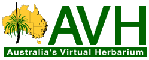

Links
Home
Query AVH
About AVH
Partners
Help
Links
Log in/Register
Floras
Flora of Australia
FloraBase – the Western Australian Flora
eFloraSA – Electronic Flora of South Australia
PlantNET – New South Wales Flora Online
Flora of Tasmania online
Checklists
Australian Plant Name Index (APNI)
Australian Plant Census (APC)
Catalogue of Australian Mosses (AusMoss)
Checklist of Australian Liverworts and Hornworts
Interactive Catalogue of Australian Fungi (ICAF)
Checklist of the Lichens of Australia and its Island Territories
Australian Marine Name Algal Index (AMANI)
Other specimen databases
Atlas of Living Australia (ALA)
Global Biodiversity Information Facility (GBIF)
BioCASE portal
Software
BioCASe provider software